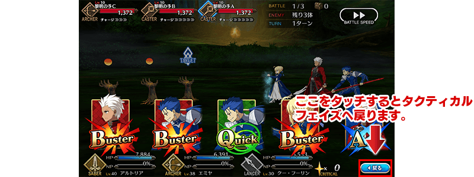
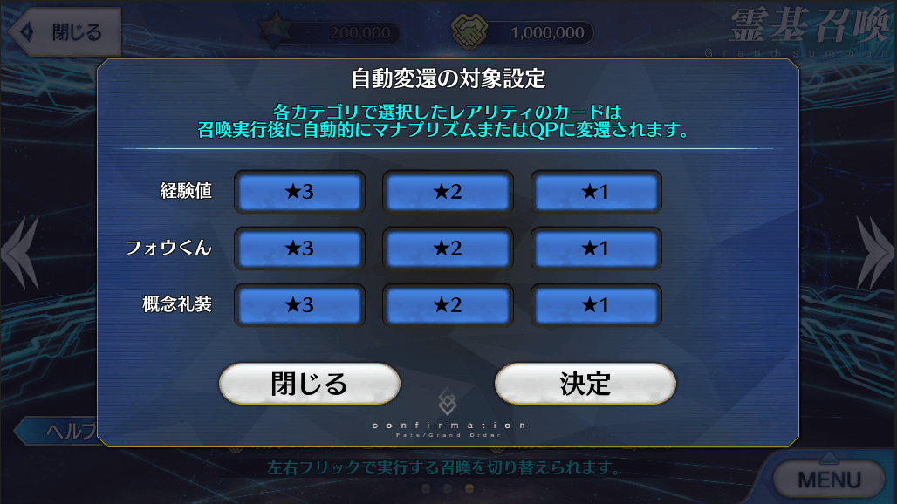
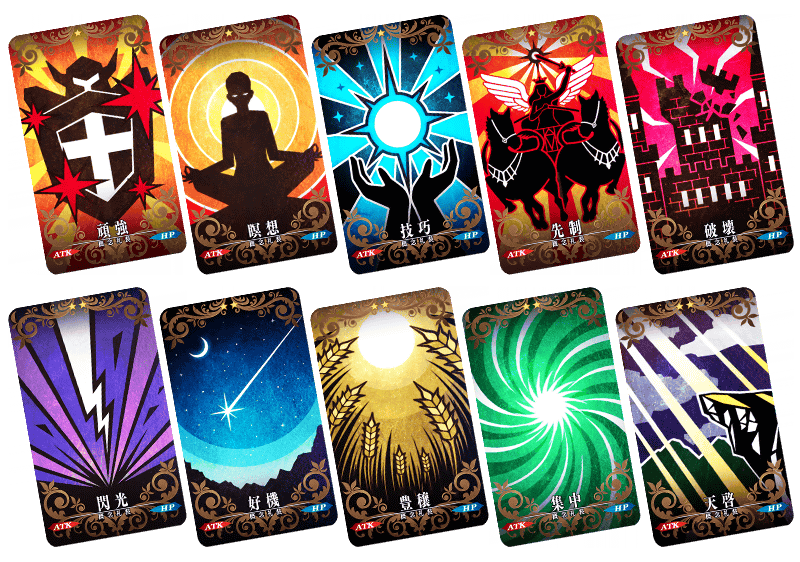

- 3/28
- 【來自迦勒底廣報局】關於4月4日(三)的遊戲更新
非常感謝各位使用「Fate/Grand Order」。
來自迦勒底廣報局，告知關於預定2018年4月4日(三)的下次遊戲更新。
以下介紹更新後反映的更新內容中，具有代表性的更新內容。
▼遊戲的修改
・在戰鬥修改為可從指令階段返回戰術階段。

※開發中畫面。
・在友情點數召喚追加自動將召喚的靈基變還(販賣)成魔力稜鏡或QP的功能。
事先設定好變還對象，在友情點數召喚後就會自動變還(販賣)對象靈基。


※開發中畫面。
・可從友情點數召喚入手的★1(C)及★2(UC)的概念禮裝全部翻新(插圖和ATK/HP及技能等全部革新)。
＜做為翻新對象的概念禮裝一覧＞
做為翻新對象的概念禮裝如下。
請注意遊戲更新以後，下述的概念禮裝無法入手。

以上為預定2018年4月4日(三)實施的下次遊戲更新主要內容。
另外今後，也預定在期間限定活動和期間限定宣傳活動中，會有將通過主線關卡第1部設為開放條件的情況。
無論如何，如果推進主線關卡第1部的攻略會有所幫助。
今後也請多多指教「Fate/Grand Order」。